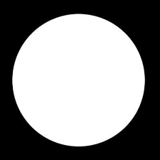

<!DOCTYPE html>
<html lang="es">
<head>
    <meta charset="UTF-8">
    <meta name="viewport" content="width=device-width, initial-scale=1.0">
    <title>Eyetracker</title>
    <script src="https://unpkg.com/jspsych@7.3.4"></script>
    <script src="https://unpkg.com/@jspsych/plugin-html-button-response@1.2.0"></script>
    <script src="https://unpkg.com/@jspsych/plugin-html-keyboard-response@1.1.3"></script>
    <script src="https://unpkg.com/@jspsych/plugin-image-keyboard-response@1.1.3"></script>
    <script src="https://unpkg.com/@jspsych/plugin-preload@1.1.3"></script>
    <link href="exp.css" rel="stylesheet" type="text/css" />
</head>
<body></body>
<script>
    /* Initialize jsPsych */
    var jsPsych = initJsPsych({
        on_finish: function() {
            jsPsych.data.displayData();
        }
    });

    /* Preload images */
    var preload = {
        type: jsPsychPreload,
        images: ['img/blue.png']
    };

    /* Create timeline */
    var timeline = [preload];

    /* Instructions */
    var instructions = [
        {
            type: jsPsychHtmlKeyboardResponse,
            stimulus: '<p style="color:white;">Presiona enter cuando los lentes estén calibrados</p>'
        },
        {
            type: jsPsychHtmlKeyboardResponse,
            stimulus: '<div style="font-size:60px;color:white;">+</div>',
        },
        {
            type: jsPsychHtmlKeyboardResponse,
            stimulus: '<p style="color:white;">Sigue los puntos y mantén la mirada fija</p>'
        }
    ];

    timeline.push(...instructions);

    /* Display points configuration */
    var points = [
        { margin: '0px 0px 0px 0px' },       
        { margin: '263.25px 348.435px 0px 0px' }, 
        { margin: '263.25px 0px 0px 348.435px' }, 
        { margin: '0px 348.435px 263.25px 0px' }, 
        { margin: '0px 0px 263.25px 348.435px' }, 
        { margin: '263.25px 0px 0px 0px' },       
        { margin: '0px 0px 263.25px 0px' },      
        { margin: '0px 348.435px 0px 0px' },    
        { margin: '0px 0px 0px 348.435px' }       
    ];

    /* Function to create point trials */
    function createPointTrial(margin) {
        return {
            type: jsPsychHtmlKeyboardResponse,
            stimulus: ``,
            choices: "NO_KEYS",
            trial_duration: 4000,
            post_trial_gap: 1000
        };
    }

    /* Add points and intervals to timeline */
    points.forEach(point => {
        timeline.push(createPointTrial(point.margin));
        timeline.push({
            type: jsPsychHtmlKeyboardResponse,
            stimulus: "",
            choices: "NO_KEYS",
            trial_duration: 1000
        });
    });

    /* Final calibration cross */
    var finalCalibration = {
        type: jsPsychHtmlKeyboardResponse,
        stimulus: '<div style="font-size:60px;color:white;">+</div>',
    };
    timeline.push(finalCalibration);

    /* Run the experiment */
    jsPsych.run(timeline);
</script>
</html>
